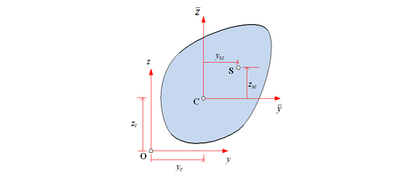
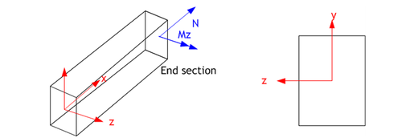
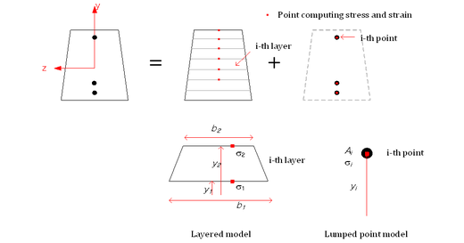
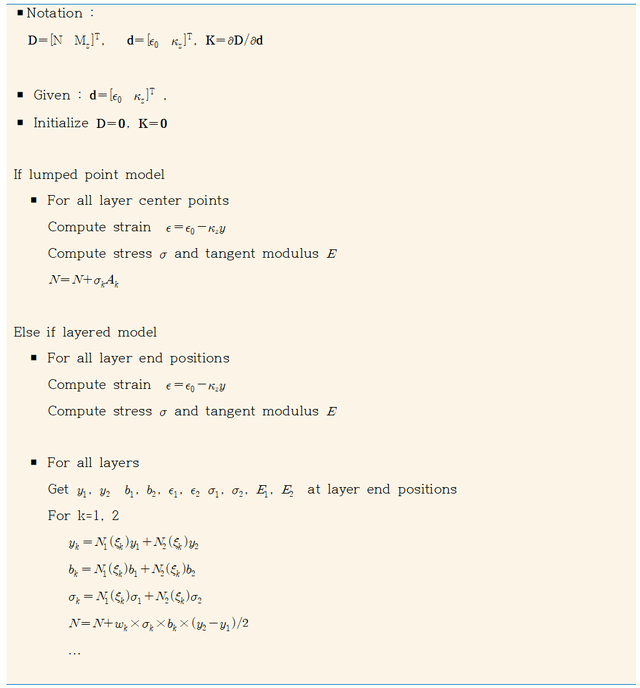
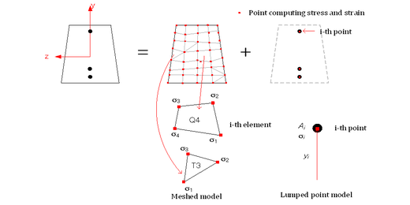
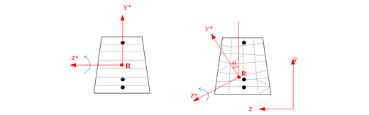
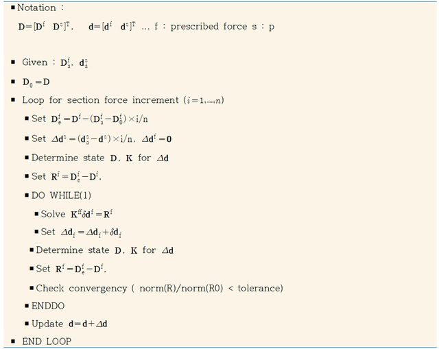
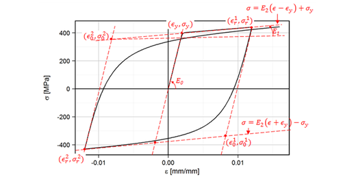
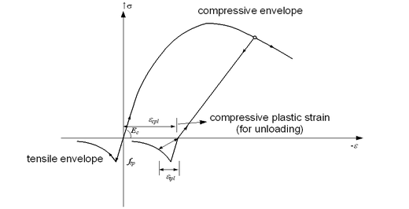

6 단면해석 이론(Section Theory)
6.1 단면상수 계산 이론
비합성단면(non-composite section)에서 계산되는 단면 상수는 다음과 같다.
- 단면적(\(A\)): 단면적
- 단면2차모멘트: \(I_{y}\), \(I_{z}\), \(I_{yz}\) [도심을 기준으로]
- 전단중심: \(y_{s}\), \(z_{s}\) [도심을 기준으로]
- 전단면적: \(A_{sy}\), \(A_{sz}\)
- 비틈상수(torsional constant): \(J\)
- 도심(\(y_c\), \(z_c\)): 주어진 좌표계에서의 도심
Fig. 4에 제시한 것과 같이 도심은 주어진 원점을 기준으로 하지만, 나머지 물성치 중 기준점이 필요한 물성치는 도심을 기준으로 계산된다.

Fig. 4. 단면상수 계산시의 좌표계단면적, 단면1차 및 2차모멘트 등 다음과 같은 식을 통해 계산가능하다.
도심과 도심에 대한 단면2차모멘트는 다음을 통해 계산한다.
임의 단면의 경우 적층모델이나 유한요소 메쉬와 같은 이산화가 주어진 경우 위에서 제시한 식은 간단한 적분을 통해 계산할 수 있다. 전단중심, 전단면적, 비틈상수는 2차원 포텐셜 문제를 구성한 후 경계조건을 부과하여 계산할 수 있다. 이를 위해서는 2차원 유한요소 메쉬를 대상으로 유한요소 해석을 수행하게 된다. 이 프로그램에서는 3절점 및 4절점 요소가 사용되었다. 만약 합성단면이면 \(EA\), \(EI_y\), \(EI_z\), \(EI_{yz}\), \(GA_{sy}\), \(GA_{sz}\), \(GJ\) 등과 같이 탄성계수 및 전단탄성계수를 곱해진 형태로 계산된다.
6.2 비선형 단면 해석 이론
비선형 단면 해석은 중립축에 수직한 평면이 변형후에도 수직과 평면을 유지한다는 Bernoulli 보 이론에 근거하고 있다. 적용되는 좌표계는 Fig. 5과 같으며, 축변형/축력은 원점을 가력되고 모멘트/곡률을 z축을 기준으로 가력되는 것으로 가정한다.

Fig. 5. 좌표계 및 하중보의 임의 단면에서 발생하는 단면력 \(\mathbf{D}\)와 이에 대응하는 단면변형 \(\mathbf{d}\)를 다음과 같이 정의할 수 있다.
위에서 \(N\), \(M_z\)는 축력과 휨모멘트, \(\epsilon_0\)와 \(\kappa_z\)는 각각 대응하는 기준 축에서의 축변형과 곡률이다. 한편 단면 내의 임의 위치에서의 응력 \(\sigma(y)\) 과 변형률 \(\epsilon(y)\)은 기준 축으로부터 y 위치에서 정의할 수 있으며, 응력과 변형률은 적절한 일축재료모델로부터 구성할 수 있다.
변형률과 단면변형과의 관계(kinematic relation)은 다음과 같다.
또한, 단면력은 응력의 적분으로 구성할 수 있다.
단면해석에서는 주어진 단면변형으로부터 식 (6)에 의해 단면력이 계산이 필요하다. 또한 아래와 같은 선형화된 단면력-단면변형 관계에서의 접선강성행렬이 필요하다.
식 (6)와 식 (7)의 계산을 위해서는 단면의 적절한 이산화와 적분이 필요하다. 여기에서는 적층모델(layered section) 또는 철근 따위를 고려할 수 있도록 임의 위치에 면적이 집중된 집중 점 모델을 적용한다. 이산화된 단면에 대한 단면력과 접선강성행렬은 다음과 같다.
위에서 \(n\)은 적층 수 또는 집중점의 수를 의미하며 적용하는 이산화모델에 따라 \(N_i\) 등은 다음과 같다.
적층모델
집중점 모델

Fig. 6. Layered Section집중점 모델을 적용할 경우 주어진 단면변형에 대해 별도의 수치적분 없이 단면력 및 접선강성행렬을 계산가능할 수 있지만, 적층모델을 적용할 경우 각 층에서 수치적분이 필요하다. 각 적층내에서 응력 및 폭이 선형분포한다고 가정하면, 각 적층내의 좌표 \(y\), 응력 \(\sigma\), 폭 \(b\)는 다음과 같이 \(\xi \in [-1, +1]\)의 함수로 표현가능하다.
여기에서
따라서 Gauss-Legendre 적분법을 적용하면 다음과 같다.
여기에서 \(\xi_1 = -\frac{1}{\sqrt{3}}, \quad \xi_2 = \frac{1}{\sqrt{3}}, \quad w_1 = w_2 = 1\)이고 적분은 3차 다항함수까지 정확하다. 리스트 1은 단면의 상태 결정 알고리즘을 도시한 것이다. 집중점 모델을 적용하는 경우 집중점에서 응력과 변형률이 계산되지만, 적층모델에서는 각 적층의 상하연단에서 응력과 변형률의 계산이 이루어진다.

List. 1. 단면 상태 결정 알고리즘지금까지 제시한 이론은 적층단면(layered section)과 point로 구성된 단면을 대상으로 제시되었다. 단면 내에 2차원 메쉬를 갖는 단면도 같은 방식으로 해석이 가능하다. 메쉬를 구성하는 절점에서 변형률을 계산하고, 이후 그 절점에서 응력을 계산한다. 이후 각 요소에 대해 수치적분을 수행하여 단면력을 계산하게 된다.

Fig. 7. Meshed Section지금까지는 축력/축변형의 기준점은 원점, 모멘트/곡률은 z축을 사용하였다. 이 값은 변경가능하다. 적측단면의 경우 축력/축변형의 기준점을 변경할 수 있으며, 메쉬를 갖는 단면은 회전축도 변경가능하다.

Fig. 8. 기준점과 회전각6.3 비선형 단면 해석 알고리즘
hfSectAnalyzer는 축력 또는 축변형, 모멘트 또는 곡률을 재하는 해석이 가능하다. 해석에서 주어지는 단면력 및 단면변형은 증분(increment)을 통해 해석 되며, 각 증분내에서 필요한 경우 평형조건을 만족시키기 위해 Newton 법을 적용한다. 프리텐션의 경우 대응하는 변형률(prestrain)을 계산하여 설정한 후 평형조건을 만족하도록 해석하며, 포스트텐션은 주어진 프리스트레스 조건과 평형조건을 만족하도록 해석을 수행한다.

List. 2. 해석알고리즘한편 상기 해석을 연속적으로 적용할 수 있으며, 부가적으로 프리텐션(pretension) 및 포스트텐션(posttension)을 적용할 수 있다. 단면해석 결과는 주어진 좌표를 기준으로 단면변형과 단면력이 계산된다. 이 값으로부터 중립축은 다음과 같이 계산할 수 있다. 중립축 위치 는 을 만족한다. 따라서 다음과 같다.
위 결과는 프로그램에서 제공하지 않는데 그 이유는 축력만 존재하거나 축력이 모멘트에 매우 큰 경우 중립축을 위 식으로 정의하는 것이 무의미하기 때문이다.
6.4 Material model
지원하는 일축 응력-변형률 모델은 선형탄성모델(IsoElasticity), von Mises 탄소성 모델(vonMises), 일축 강재 모델(USteel), 일축 일반화 모델(UGeneric) 등 3가지이다. IsoElasticity는 선형 탄성 재료의 모델링에 사용할 수 있다. 강재는 vonMises 또는 USteel을 사용할 수 있는데 이중선형 형태의 응력-변형률의 경우 USteel을, 다중선형 등의 경우에는 vonMises를 적용할 수 있다.
6.4.1 USteel을 이용한 철근 및 텐던 모델링
철근 및 텐던을 위한 모델로 Menegotto-Pinto 모델에 근거한 모델(USteel)을 제공한다.

Fig. 9. USteel 모델 (Menegotto-Pinto Model)6.4.2 UGeneric를 이용한 콘크리트 모델링
콘크리트는 Fig. 6과 같은 제공한다. 인장 및 압축 포락선, 응력 제하시의 손상 등을 입력을 통해 제어할 수 있다.

Fig. 10. UGeneric 모델